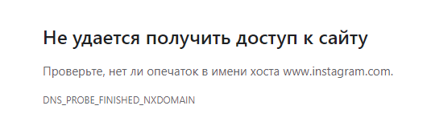

Настройки -6 – fake gen 2 всё грузит но сегодня перестал работать твиттер а инстаграмм до этого не разу не запускался хотелось бы узнать как это узнать
Они заблокированы по ip. Включите у себя в браузере в настройках безопасный dns (он же doh он же dns over https) в максимальном режиме и укажите свой адрес doh
Спойлер
https://common.dot.dns.yandex.net/dns-query
https://dns.comss.one/dns-query
https://dns.adguard-dns.com/dns-query
https://dns.cloudflare.com/dns-query
Возможно, потребуется перезапустить браузер
KDS: Не возможно потребуется, а строго рекомендуется - чтобы очистился кэш DNS браузера и забаненные IP оттуда 100%-но испарились. Это проще и быстрее, чем пользователю рассказывать, где в его браузере чистить кэш DNS
Спасибо за помощь 
Никаких IP для hosts тут указано не будет, во избежание их бана. Вам представлен рабочий вариант.
Ютуб заработал, но вот другие запрещенные сайты, тот же твиттер и инстаграмм не работает, есть какое-то решение? Перебирал --dpi-desync-ttl=*, но вообще везде глухо как на пикче. Если выключать окно preset_russia.cmd, то там автоматически отключается winDivert?

Добрый день. СПб, Билайн. Все работает кроме твиттера.
Перепробовал:
- –dpi-desync-autottl от 1 до 7.
- https://common.dot.dns.yandex.net/dns-query
https://dns.comss.one/dns-query
https://dns.adguard-dns.com/dns-query
https://dns.cloudflare.com/dns-query
пробовал даже различные комбинации вкл днс + ттл (1-7), выкл днс + ттл (1+7) - Хост чист, как белый снег.
- Перезагружал.
У меня тоже Билайн и похоже что x.com заблокирован по IP, тут обход DPI не поможет (ДНС-сервера работают правильно)
Простым пингом проверь. Если ответ придет, то ничего не заблокировано.
Именно что не пингуется
Билайн блочит x.com тупо по IP. все 4 IP 104.244.42.1 104.244.42.65 104.244.42.129 104.244.42.193. Как решение сканите каким-либо сервисом типа DNS Checker - DNS Check Propagation Tool еще IP для него и добавляете в hosts (c:\Windows\System32\drivers\etc) строки вида
найденный_ip x.com
найденный_ip www.x.com
найденный_ip twitter.com
найденный_ip www.twitter.com
перегружать систему необязательно.
Как раз пингом можно проверить IP перед их помешением в hosts. Если НЕ пингуется, то нет смысла добавлять. Конечно в общем случае может быть что пинг не работает а сайт работать будет, но это не для этого случая. Тут не заработает пинг - явный блок по ИП. Что так билайн жестко с твиттером не ясно.
Тогда только проксировать.
Или прописывать хосты. У х имеются бекап сервера.
Билайн.
ip 104.* не пингуются.
Выбрал бразильские ip на сайте Dns Checker для трёх хостов:
x.com, twitter.com, abs.twimg.com
Добавил их в hosts, заменив предыдущие записи для доменов твиттера и x.com.
Выполнил ipconfig /flushdns
Почистил куки для этих доменов.
Перезапустил браузер.
x.com заработал.
Zapret в то же время должен быть включен.
Спасибо. Помогло. А то я уже замучился в хроме dns-сервера перебирать.